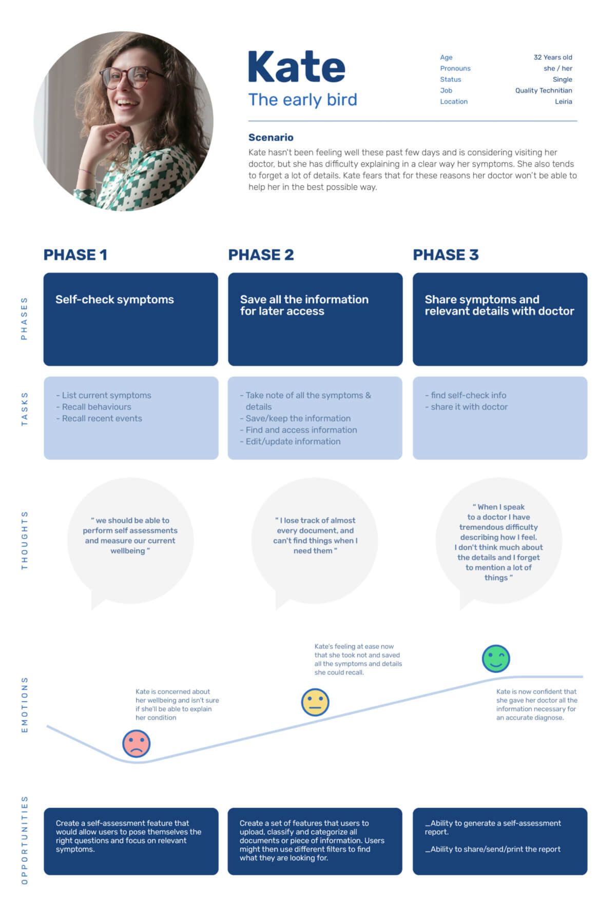
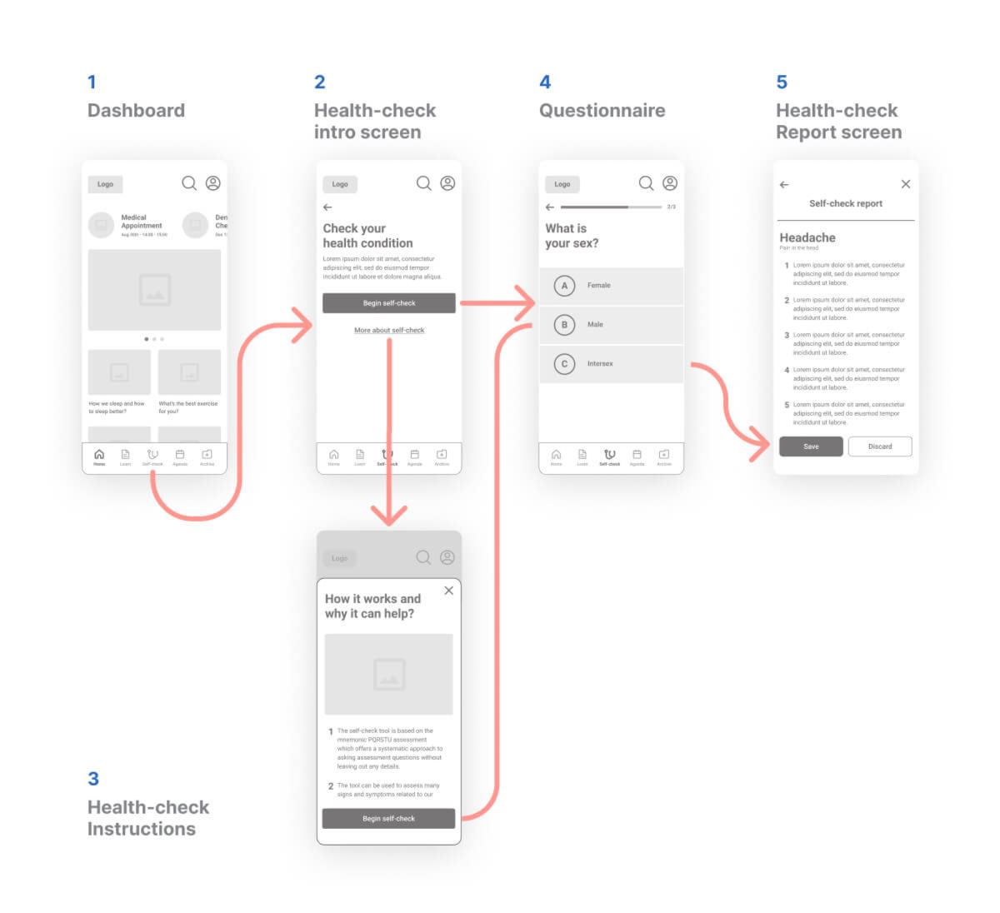

Viv Platform
A health and wellbeing web app designed to be a go-to tool when it comes to manage people’s daily health issues.
Project
Overview
Problem
How might we help People achieve a greater balance between health, wellness, work, and life in general?
Solution
A web platform ready to help assessing symptoms, save medical data and access physical and mental wellbeing features.
Role
UX Designer
- User Research
- Prototyping
- Usability Testing
- UI Design
- Visual Identity
Tools
- Paper and Pen
- Zoom
- Figma
- Illustrator
- Zeplin
Timeline
Mar 2021 - Jan 2022
while working a fulltime job
+ freelancing
The Challenge
Some
Context
Whether caused by the "always on" lifestyle, information overload, stress at work or life in general, people are struggling more and more to manage and deal with daily health issues. Viv was created to help these users stay on top of their health and wellness.
Problem Statement
How might we help People achieve a greater balance between health, wellness, work, and life in general?
Research
Market Gaps
Competitive Analysis
At this point, there was little understanding of which kind of solutions already existed in the market to address the problem. I conducted a competitive analysis in order to understand who our competitors were, learn how they’ve managed to solve similar problems, and what opportunities/gaps existed.
SWOT Profiles
Opportunities
üìå agregate
The possibility of combining multiple practical features in one app alone.
üìå simplicity
A simple, minimal app that can be used in the most stressful of contexts.
Know
the User
Interviews
After gaining a better perspective of the problem space, it was time to engage with potential users and identify their actual needs and goals. To that effect, a user research was conducted by means of interviews.
Research Goals
To understand users on a deeper level regarding their health: what their habits are, what routines, goals, obstacles.
Get to know users’ opinions on existing Apps and competing platforms.
Collect data that may validate previous assumptions.
Key Findings
üìå
Health seems to be a subject that drives a lot of the respondents’ decisions during the day.
üìå
These kind of apps are somehow useful but the fact that you need one application for each kind of issue makes it all that more confusing.
üìå
All of the participants struggle when trying to find a document, an exam result, or that last prescription. Lack of organization seems to be the cause of some stress.
üìå
Most of participants have tried a few self-care apps to assist them with their meditation, help them sleep better, or simply track some biometric data.
üìå
When it comes to scheduling appointments, they usually do it by phone and save the date on their digital calendars.
Research Analysis
After a reasonable amount of data was collected from the previous stages, it was time to explore, make some sense of it, and turn it into meaningful insights.
This step consisted of pulling out behaviours, needs, goals, frustrations, quotes and facts from the interviews’ data.
The next move was to sort information and build clusters of related notes/ideas by creating an Affinity Map.
> Insights
Problem Statement
Health-conscious users need a way to properly assess their own health condition, save medical and health information and share it with others. because they want to stay in control of their health and wellness condition as much as possible.
Conceptualize
Persona
+ Narrative
New findings from users interviews allowed for the creation of user personas with very real needs, behaviours, pain points and goals. Once the Personas’ Frustrations, Motivations, Needs & Goals were identifyed, I could start working on journey maps and visualize the processes that users might go through to achieve their individual goals.
User Personas
User Journeys

User Flows
Ideas & Iterations
Wireframing Prototyping
Based on the sitemap and user flows, I then started to sketch the first paper wireframes that were then grouped together making low-fidelity prototypes of what I considered to be the 3 core features of the app:
Core Features
üìå self-check assessment
üìå export and share self-check reports
üìå upload files
Low-Fidelity Prototype
High-Fidelity Prototype

Usability Testing
The overall goal of the testing was to assess the learnability level of new users when interacting with the mobile version of the Platform for the first time.
* issue 1
When asked to complete a self-check, not all participants recognized “Shelf-check” links as something to assess one’s health/ symptoms.
* proposed solution
Change copy to something more direct and obvious such as: “Health-check”

* issue 2
When asked to complete a self-check, not all participants recognized “Shelf-check” links as something to assess one’s health/ symptoms.
* proposed solution
Change copy to something more direct and obvious such as: “Health-check”